The Oldest Debunked Theory in History
This chapter may seem out of place on a site about constitutional warfare and government conspiracy theories. It is not. Flat earth is where the pipeline begins for millions of people. Understanding why someone believes the earth is flat helps explain why someone believes in devolution, military government, or a secret plan to save the country. The psychology is the same. The grifters are the same. And the money flows through the same channels.
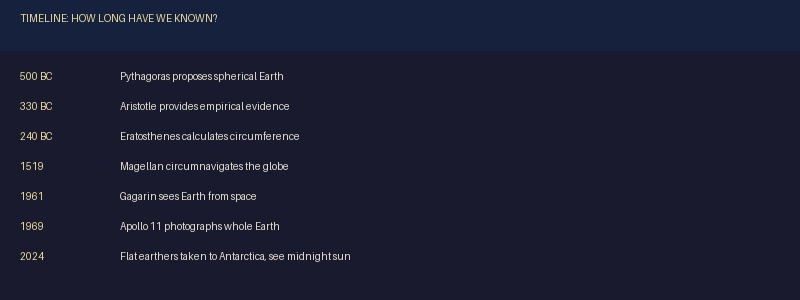
Pythagoras knew the earth was round in the 6th century BC. He did not guess. He observed. The mathematical relationships he studied in geometry and astronomy pointed to a spherical earth, and he said so. A generation later, Aristotle proved it empirically by around 330 BC. He noted that the earth casts a circular shadow on the moon during lunar eclipses, that different constellations are visible from different latitudes, and that ships disappear hull-first over the horizon. These are not theories. They are observations that anyone can repeat today.
Then came Eratosthenes, the Greek mathematician who served as chief librarian at the Library of Alexandria. Around 240 BC, he calculated the circumference of the earth using nothing more than two sticks, two cities, and the angle of the sun. He measured the shadow cast by a vertical stick in Alexandria at noon on the summer solstice, knowing that at the same moment in Syene (modern Aswan), the sun was directly overhead and cast no shadow. From the angle of the shadow and the distance between the two cities, he calculated the earth's circumference. He got it remarkably close to the actual value. A man with two sticks figured this out more than 2,200 years ago.
The myth that medieval Europeans believed in a flat earth is itself a myth. It was created in the 17th century and popularized in the 19th century by Washington Irving's fictionalized biography of Columbus. Medieval scholars, including Thomas Aquinas and the Venerable Bede, accepted the spherical earth as settled science. The idea that Columbus had to convince a flat-earth-believing world that his voyage was possible is fiction. His critics did not think he would sail off the edge. They thought he had underestimated the distance to Asia. They were right.
We have known the earth is round for over 2,500 years. Flat earth is not a modern discovery. It is a modern grift.
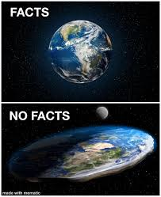
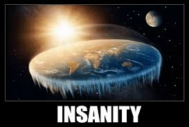
The Numbers
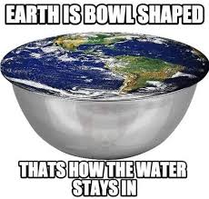
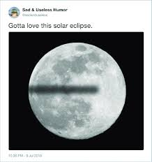
That 82 percent figure deserves attention. It means that 18 percent of young adults in America are not confident that the earth is round. Not that they actively believe it is flat, but that they are uncertain enough to hedge. In a country with access to the internet, satellite imagery, commercial air travel, and 2,500 years of accumulated scientific observation, nearly one in five young people cannot say with certainty that the planet they live on is a sphere. That is not a failure of science. It is a failure of trust. And that failure of trust is exactly what the conspiracy industry exploits.
How YouTube Built a Movement
The modern flat earth movement was not built by scientists, researchers, or independent thinkers. It was built by an algorithm. YouTube's recommendation engine, designed to maximize watch time and engagement, systematically pushed flat earth content to users who had never searched for it. A person watching a space documentary might be recommended a flat earth video. A person watching a science explainer might see a flat earth rebuttal in their sidebar. The algorithm did not care whether the content was true. It cared whether people clicked on it. They did.
Researchers at Texas Tech University studied the phenomenon and found that the recommendation algorithm was the primary driver of flat earth belief. Their interviews with flat earth convention attendees revealed a consistent pattern. People did not arrive at flat earth through independent research or personal observation. They arrived through YouTube. The platform took a fringe idea that had virtually no following and turned it into a global movement by putting it in front of millions of people who were never looking for it.
YouTube eventually adjusted its algorithm to reduce recommendations for flat earth content, but the damage was done. The communities had already formed. The Telegram channels were already active. The merchandise stores were already open. The conferences were already selling tickets. YouTube built the audience, and the grifters kept it.
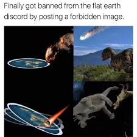
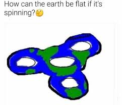
This matters because the same algorithmic amplification that built the flat earth movement also built the Q movement, the devolution movement, and the sovereign citizen movement. The platforms did not create the ideas. But they created the audiences. And audiences are where the money is.
The Grifters and the True Believers
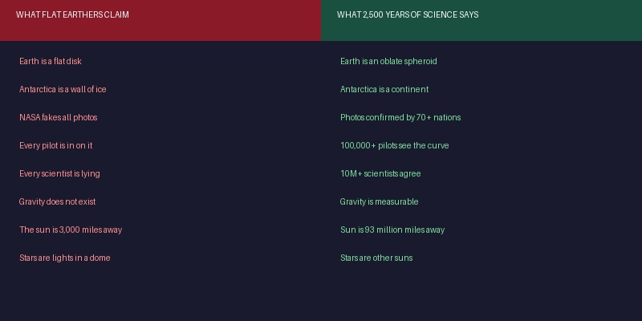
There are two types of people in the flat earth community: those making the T-shirts and those buying them. Understanding the difference is essential to understanding how the conspiracy industry works at every level.
The grifters are the content creators, the conference organizers, the merchandise sellers, and the YouTube channel operators. They produce flat earth content because it generates revenue. Some of them may genuinely believe the earth is flat. Most of them do not care either way, because the belief is not the product. The content is the product. The engagement is the product. The T-shirt is the product. Whether the earth is actually flat is irrelevant to the business model.
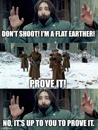
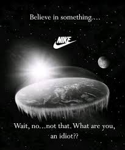
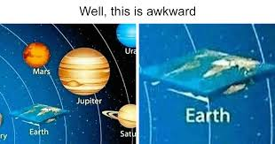
The grifters cannot be convinced to stop because stopping means giving up their income. A flat earth YouTuber who admits the earth is round loses their audience, their ad revenue, their merchandise sales, and their conference invitations in a single day. The financial incentive to maintain the lie is stronger than any scientific evidence you can present. This is not a knowledge problem. It is an income problem.
The true believers are a different challenge. They have wrapped their identity in the belief. Being a flat earther is not just something they think. It is something they are. Their social circle is flat earthers. Their online community is flat earthers. Their sense of being special, of seeing what others cannot see, of being awake while the rest of the world sleeps, is tied directly to the belief. Abandoning flat earth does not just mean accepting a scientific fact. It means abandoning a community, an identity, and a sense of purpose. That is why evidence alone does not work.
Flat earth conferences charge admission. Flat earth merchandise generates revenue. Flat earth YouTube channels run ads. Flat earth books sell on Amazon. The business model is identical to devolution, law of war, and Q: create content that generates engagement, monetize the engagement, never deliver proof. The product is never the truth. The product is the community, the identity, and the endless promise that proof is just around the corner.
The "Final Experiment"
In December 2024, a retired businessman named Will Duffy decided to put the flat earth theory to rest once and for all. He funded an expedition called "The Final Experiment," paying to bring flat earth believers to Union Glacier Camp in Antarctica to witness 24-hour daylight. On the flat earth model, 24-hour sunlight in Antarctica is impossible. The sun, according to flat earthers, circles above the flat plane like a spotlight and can never illuminate Antarctica for a full 24 hours. If the participants witnessed the midnight sun, the flat earth model would be falsified by their own eyes.
They went. They saw the midnight sun. For 24 continuous hours, the sun circled the sky above them without setting. The participants had to concede that they witnessed exactly what the globe model predicts and what the flat earth model says is impossible.
But not all of them accepted that the earth is a sphere. Some suggested the experiment was manipulated. Some said they needed more time to process. Some acknowledged what they saw but could not bring themselves to abandon the belief system they had built their identity around. One participant, after watching the sun circle the sky for 24 hours straight, said he still was not sure.
This is the core problem with conspiracy thinking. When the evidence contradicts the belief, the believer rejects the evidence rather than updating the belief. The goal was never to find the truth. The goal was to confirm what they already believed. When confirmation became impossible, the response was not acceptance. It was denial, deflection, and rationalization.
This is the same psychology that allows devolution followers to continue believing after Jon Herold declared "devolution phase over" in January 2025. It is the same psychology that allows Derek Johnson's followers to keep watching his videos after none of his predictions have come true. It is the same psychology that allows Q followers to keep decoding drops from an anonymous poster who has not posted in years. The evidence does not matter. The identity matters. And the grifters know it.
The Gateway Drug
Flat earth is not just a harmless belief about geography. It is an entry point into a much darker world. Researchers have documented that flat earth communities serve as on-ramps to more extreme conspiracy content, including antisemitism, sovereign citizen ideology, and Q. The pipeline works because flat earth requires its believers to accept a single foundational premise: every authority is lying to you.
Think about what you have to believe in order to believe the earth is flat. Every government in the world is lying. Every space agency is lying. Every airline pilot is lying. Every ship captain is lying. Every scientist in every country across every generation for 2,500 years has been lying. NASA is lying. The European Space Agency is lying. The Russian space program is lying. The Chinese space program is lying. Countries that cannot agree on anything else have somehow maintained a perfect conspiracy about the shape of the planet for millennia.
Once someone accepts that premise, the gateway is open. If NASA is lying about the shape of the earth, what else are they lying about? If every government is in on the conspiracy, what other conspiracies are they running? If scientists cannot be trusted about something as basic as geography, why would you trust them about vaccines, climate, or anything else? The distrust of authority that flat earth cultivates is the same distrust that devolution, law of war, and Q exploit. Each conspiracy theory builds on the distrust created by the last one, and flat earth is often where the chain begins.
CNN reported that the flat earth conspiracy hides a darker core. The communities that form around flat earth belief do not stay focused on geography. They drift toward antisemitic theories about who controls the "lie." They drift toward sovereign citizen ideology about how governments have no legitimate authority. They drift toward Q narratives about secret cabals running the world. Flat earth is the first domino. The rest fall on their own.
That is why this chapter belongs on this site. Flat earth is not separate from the conspiracy industry described in the previous chapters. It is the front door.
The Irony
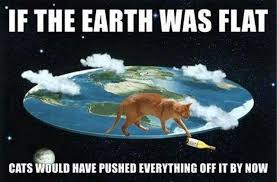
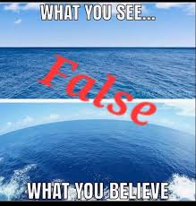
The Flat Earth Society's Facebook page once posted, or was widely memed as posting, that they have members all around the globe. Whether authentic or photoshopped, the statement captures the fundamental absurdity of the movement. You cannot have members "around" something that is flat. The word "around" implies a curved surface. The word "globe" means sphere. The language of a spherical earth is so deeply embedded in human experience that even flat earthers cannot escape it.
We say the sun "rises" and "sets." We talk about "time zones." We refer to "the four corners of the earth" while simultaneously understanding that a sphere has no corners. We say someone has "traveled the world" or "gone around the world." Every one of these phrases assumes a round earth. The flat earth movement exists inside a language built on the assumption that the earth is a sphere, and that language reveals the truth even when the speakers try to deny it.
The deeper irony is that flat earth believers use the internet to spread their message. The internet runs on satellite communications. Satellites orbit a spherical earth. GPS, which flat earthers use to navigate to their conferences, depends on a network of satellites whose positions are calculated based on the earth being a sphere. The technology that enables the flat earth movement to exist is itself proof that the earth is round. They are using the globe to deny the globe.